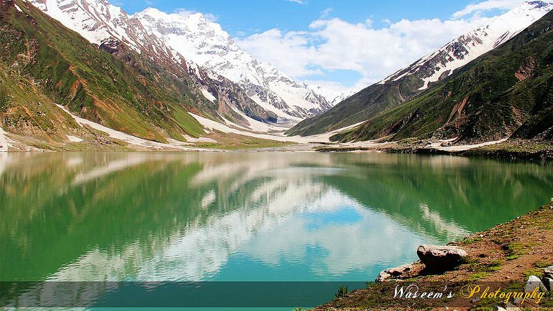

1st Dec, 2021
SWAT VALLEY the Beauty
known as the Switzerland of Pakistan, Swat valley is one of the major tourist attractions of Pakistan. The best season for tourism is from March till October. The visitors can enjoy its magnificent mountains, lush green forests, running streams and meadows. Some of the major languages spoken in the swat valley area are Pushto and Kohistani. Nowadays Urdu and English are also spoken by the locals.
Swat valley has one of the oldest civilization’s history and one of the beautiful Scenery one could ever see. Located between the foothills of Hindukush mountain range, Swat valley is part of the North-West Frontier Province of Pakistan. Swat valley's location has a major strategic importance as it lies in the region where South Asia, Central Asia and China meet. The major attractions of the Swat valley include its archaeology, the lush green sites, history and the art.

5th Dec, 2021
Malam Jabba
Malam Jabba is the perfect tourist destination, and probably the best ski resort in Pakistan. Malam Jabba has two Buddhist stupas and six monks scattered throughout the area. The existence of such high-rise palaces clearly indicates that the area was inhabited more than 2000 years ago. Malam Jabba also offers two wonderful hiking trails that offer a great location. This beautiful tourist place located on the 9,199fts is nothing but a miracle. The paved road and amazing constriction of the restaurants at such height would leave your eyes wide open. If you have never been to Malam Jabba, now is the time to
Like other areas of Pakistan, Malam Jabba has also undergone some major development processes and now it is known as one of the most beautiful landmarks of the country. PTDC Malam Jabba has now renovated and turned into Pearl Continental Hotel and Resorts. This elegant hotel allows you to have a great view from your window at the height of 9200ft’s. They have a special kids activity area that helps in keeping your kids engages in safe indoor activities so you can enjoy yourself in those wide mountains. When it comes to the food you will enjoy the best hygienic food. The chefs are trained and take extra measures to look after the cleanness of the cooking area.

7th Dec, 2021
Saif ul Malook
Lake Saiful Muluk is a lake located at the the south aspect of position end of the Kaghan Place near Naran. It is in the the south aspect of position the south aspect of of Mansehra Set up the Khyber-Pakhtunkhwa position, Pakistan. At an level of 3,224 m (10,578 feet) above sea level it is amongst one of the best lakes in Pakistan.The environment here is consistent during day time while the warmed large variety comes to less stages at night.
A story known as Saiful Muluk, published by the well-known sufi poet Mian Muhammad Bakhsh, is associated with the river. It is the story of the royal prince of Persia who dropped in love with a fairy queen at the river. The effect of the river elegance is of such level that people believe that fairies come down to pond in complete celestial satellite. A poet and author from Balakot Dr Mujahid hussain wrote the story of Saiful Muluk in writing illustrating the regional edition.

10th Dec, 2021
Faisal Mosque, Islamabad
Faisal Mosque is the mosque in Islamabad, Pakistan. Located on the foothills of Margalla Hills in Islamabad, the mosque features a contemporary design consisting of eight sides of concrete shell and is inspired by a Bedouin tent.
The postcard-worthy landscape of the mosque along with its awe-inspiring design and elegant interior finishing has made it one of the most visited monuments in the entire country. Owing to its angular main structure, tall minarets, well-manicured courtyards and pools with fountains, Faisal Mosque is the perfect blend of traditional and contemporary Islamic architecture.
Also referred to as Faisal Masjid or Shah Faisal Mosque by some, this mosque was a gift from the late King Faisal bin Abdul-Aziz of Saudi Arabia. The mosque was named after him to honour his commitment to the construction of this breathtaking masterpiece in the federal capital. Moreover, the Faisal Mosque was designed by a Turkish architect.

12th Dec, 2021
Daman e Koh, Islamabad
Daman-e-Koh is a viewing point and hilltop garden of Islamabad and located in the middle of the Margalla Hills.
Its name is a conjunction of two Persian words, which together means foot hills. It is about 2400 ft from sea level and almost 500 ft from the city of Islamabad. It is a popular destination for the residents as well as the visitors to the capital.
Daman-e-Koh is a midpoint for tourists on their way to the higher view point Pir Sohawa which is located at the top of Margalla Hills at an elevation of about 3600 ft. There is a plan to construct a chairlift from Daman-e-Koh to Pir Sohawa. Monkeys are a common sight during winter. Cheetahs are frequently reported to descend from higher hills of Murree during snowfall.